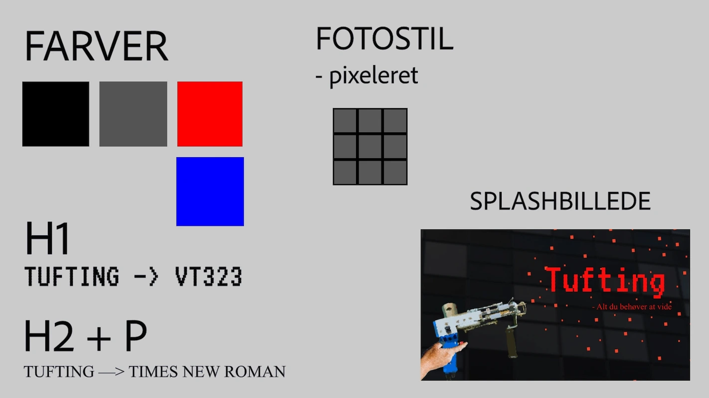
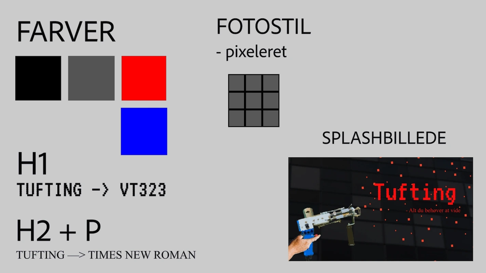

02
GRUNDLÆGGENDE WEB
I tema “02 - Grundlæggende web” fik jeg en grundlæggende viden om anvendelse af diverse redskaber, som jeg, som kommende multimediedesigner, kan anvende, når jeg senere kommer ud i erhvervslivet.
På dette tema har jeg blandt andet lært om grundlæggende principper inden for design og programmering, herunder Photoshop, Adobe XD, styletile, wireframes, layoutdiagram, princippet om mobile first, HTML, CSS, validering, responsivitet, indholdsproduktion samt forskellige stilarter inden for webdesign.
Disse redskaber har ligeledes dannet grundlag for de resterende opgaver, jeg har lavet på dette semester samt dette portfolio.
OPGAVEBESKRIVELSE
I dette tema udarbejdede jeg mit første responsive website, som handlede om min store passion, tufting.
Derudover skulle websitet tage udgangspunkt i en tildelt stilart, som i mit tilfælde blev retro gaming design, som jeg forinden havde undersøgt og fremlagt om for resten af klassen. En stil der kendetegnes som værende farverig men med en begrænset farvepalette, retro samt pixeleret.
Du kan se mit færdige produkt til højre, hvorefter du kan læse mere om min proces nedenfor.
RESEARCH OG DESIGN
I opstartsfasen besluttede jeg mig hurtigt for, at mit website skulle omhandle tufting, da der er et sjovt samspil mellem den tuftinggun jeg anvender, og hele universet inden for retro gaming design.
Herefter begyndte jeg idégenereringen af mit design på hjemmesiden ved hjælp af research, som mundede ud i et moodboard samt et styletile. Under denne fase blev jeg, udover min passion tufting, inspireret af retro spillemaskiner, farverne fra Super Mario og pixelerede retro hjemmesider samt typografi.
 

OPBYGNING AF WEBSITE
Efter at have udarbejdet et moodboard og et styletile, fik jeg udleveret en wireframe over hjemmesidens grundlæggende layout, og som jeg, i samspil med ovenstående designprincipper, brugte til at kreere selve indholdet til mit website.
Derudover fik jeg senere udleveret et layoutdiagram, som jeg fulgte, da jeg kodede i HTML-filen. Dette med henblik på at sikre struktur og semantisk opmærkning.
Dernæst blev jeg introduceret for CSS, som gør det muligt at style sine HTML-elementer. Det var ligeledes her jeg blev gjort bekendt med responsivitet samt mobile-first princippet, hvor man ved hjælp af grids og flexbox, i media queries, kan tilpasse indholdets placering på skærme, der har et højere antal pixels end på en mobiltelefon.
SPLASHBILLEDE
Til vores hjemmeside skulle vi ligeledes designe vores eget splashbillede, hvor jeg i den forbindelse fik arbejdet med Adobe Photoshop.
I udarbejdelsen af mit spalshbillede styrkede jeg mine kompetencer inden for det at arbejde med flere lag, fjerne baggrunde og opnåede en generel forståelse for, hvordan programmet virker. Udover at styrke mine færdigheder i Photoshop, fik jeg, på dette tema, ligeledes viden om grundlæggende farveteori, typografi samt ikon-design, hvilket ligeledes blev implementeret på mit website.
Til sidst i temaet validerede jeg mine HTML- og CSS-filer og uploadede herefter til min webhost ved hjælp af ftp-clienten Filezilla.